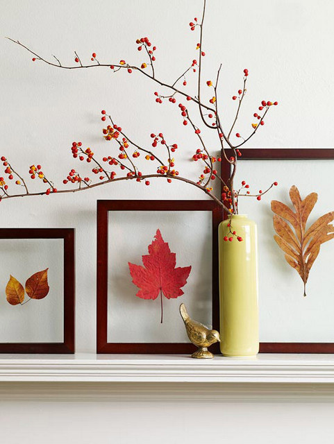
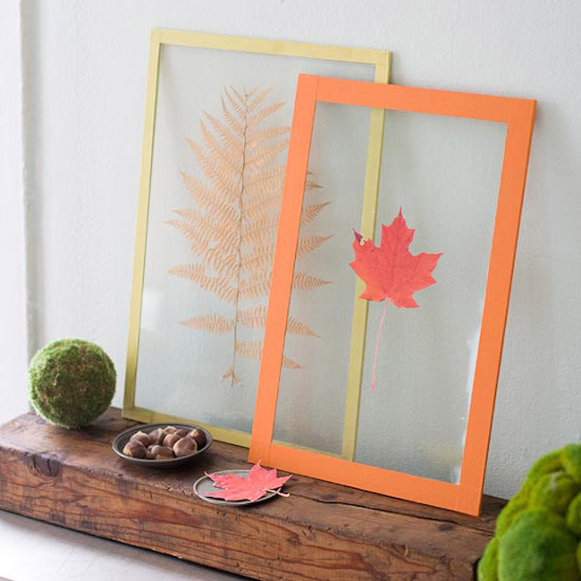

♥ dry leaves - once you have it, you love it ♥
 This is inspired by my grandpa, who loves to plant in the backyard of his house. Every summer, he would grow different types of vegetables: tomatoes, bitter melon, pumpkin, etc. As autumn arrives, the leaves of the plants crumble.
Get your own! We offer frames designed with different style leaves: